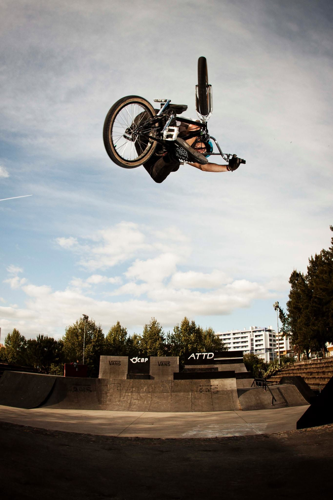
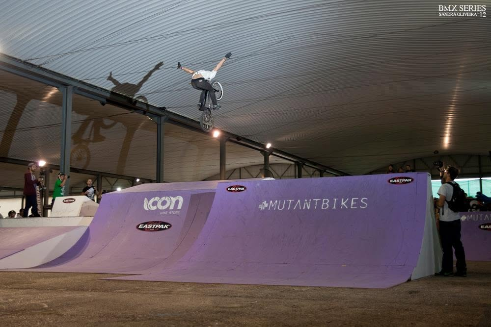
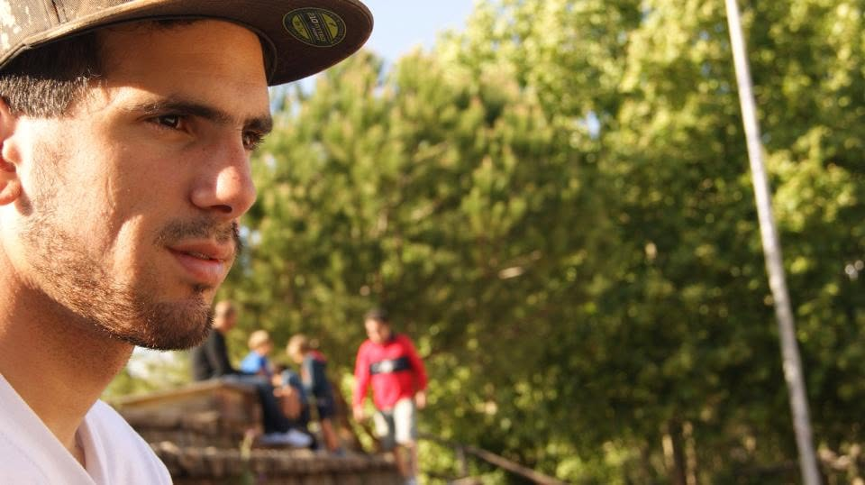

BMX FREESTYLE / RIDER SPOTLIGHT
Alexandre Rodrigues: Twenty Years of Progression
Some riders are remembered for the contests they win. Others are remembered for the way they ride. Then there are those rare riders who leave a lasting impression simply because of the passion they bring to every session.

Alexandre Rodrigues is one of those riders.
Back in 2006, at the skatepark in Portimão, Portugal, BMX brought together two teenagers who barely spoke the same language. One had only recently picked up a bike and found the busy skatepark intimidating, often watching from the sidelines rather than riding. The other had only been riding a little longer, but already showed a confidence and natural ability that stood out from everyone else.
Despite the language barrier, BMX quickly became the common language.
What started with a few pointers at the local park soon turned into daily sessions. Every afternoon meant another chance to ride, learn something new and push each other a little further. Even in those early days, it was obvious Alexandre had a gift for BMX. Tricks that took others weeks or months to learn seemed to come naturally, but it wasn’t just talent that separated him from the crowd—it was his persistence. BMX wasn’t simply something he enjoyed; it became a way of life.
Progression came quickly
As the years passed, progression came quickly.
The pair began travelling across Portugal to BMX jams and contests, where Alexandre consistently proved himself against some of the country’s best riders. His name became a regular fixture near the top of the leaderboard and, more often than not, he found himself standing on the podium at the end of the day.
One trip to northern Portugal still stands out. Like many young riders travelling to contests, the evenings were spent surrounded by older members of the CBP crew. While the adults enjoyed a beer before competition day, the younger riders weren’t joining them—and they didn’t mind. There was always another BMX video to watch, another trick to analyse, another conversation about favourite riders or plans for the next day’s contest. Those nights weren’t about missing out; they were about living and breathing BMX.
A style all his own
As his riding continued to evolve, so did his style.
Alexandre developed into an incredibly technical rider, becoming known for his balance, bike control and creative use of the front wheel. He wasn’t content riding obstacles the conventional way. Instead, he saw lines and possibilities that many others overlooked, turning everyday spots into something entirely different through originality and precision.

From local parks to new opportunities
His progression didn’t go unnoticed.
A sponsorship with LegendBikes soon followed, giving Alexandre the opportunity to represent one of Portugal’s respected BMX brands while continuing to compete around the country. Before long, another major opportunity arrived when he secured sponsorship from Vans—a milestone that opened even more doors and allowed him to travel further while representing one of the most recognised names in action sports.
Away from contests, BMX also led Alexandre into television, where he worked as a stunt double for the popular Portuguese series Morangos com Açúcar, showing that the skills developed through years of riding could reach far beyond the skatepark.

The same passion, twenty years on
Yet despite the contests, sponsorships and recognition, very little ever changed.
He remained the same humble rider who turned up at the local skatepark in Portimão almost every day, riding the same ramps with the same enthusiasm that first inspired those around him nearly two decades earlier.
Twenty years on, that progression hasn’t stopped.
Watch any edit featuring Alexandre Rodrigues and you’ll still see a rider pushing himself, refining his style and finding new ways to approach familiar terrain. The tricks may have become more technical, but the passion remains exactly the same.

For those who grew up riding alongside him, the memories stretch far beyond podium finishes and sponsorships. They’re built on countless sessions, long road trips, endless conversations about BMX and a friendship forged through a shared love of riding.
Some riders collect medals.
Others leave a legacy through the people they inspire.
Alexandre Rodrigues has done both.
Rider Spotlight is RideWire BMX’s ongoing series celebrating the riders who have shaped local scenes, inspired those around them and continue to push BMX forward—one session at a time.
← Back to Spotlight